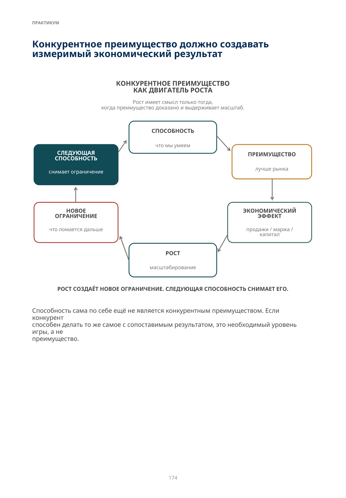
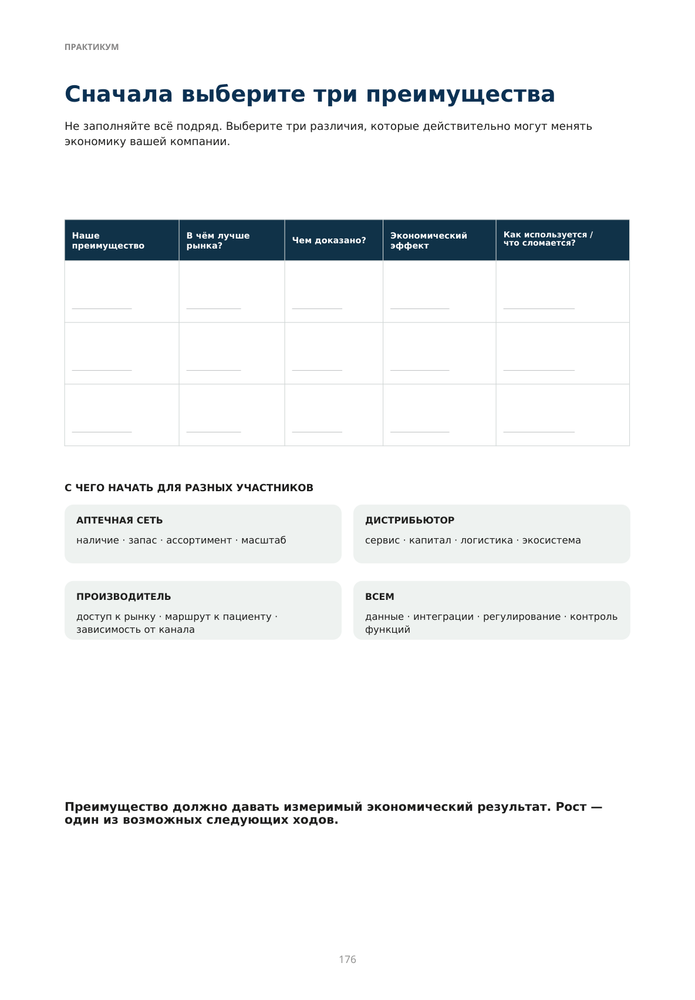
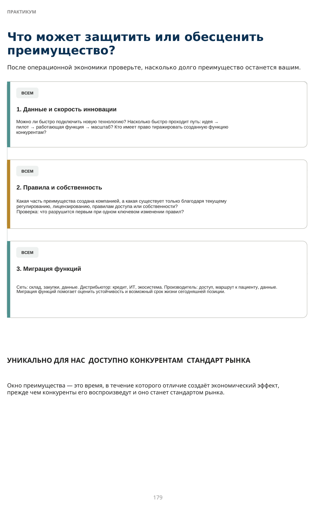
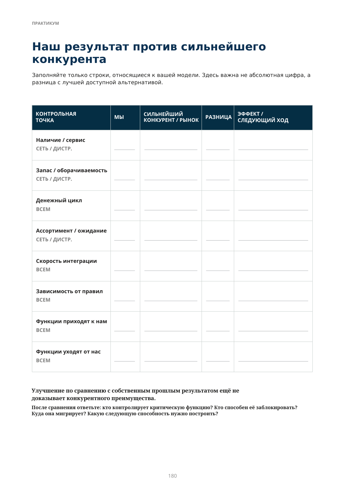
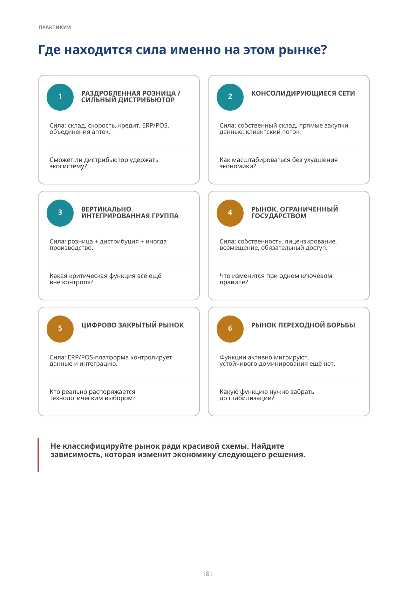
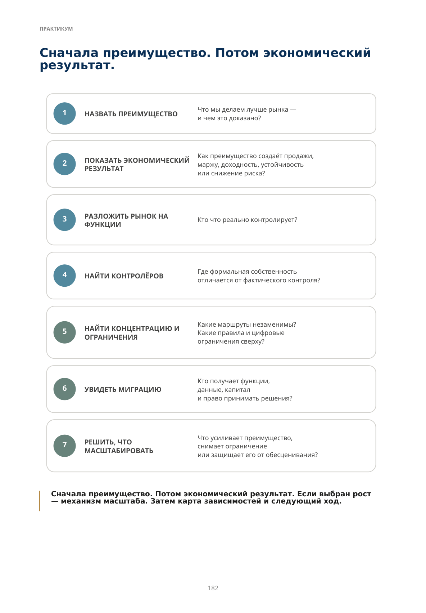

Где сейчас ваш рынок?
Диагностика конкурентного преимущества, конфигурации силы и следующего стратегического хода
Мы рассмотрели аптечную сеть, дистрибьютора, производителя, ИТ-инфраструктуру и государство. Но ни один из этих игроков не является сильнейшим всегда и везде. На одном рынке сила концентрируется у нескольких аптечных сетей. На другом — у дистрибьютора, построившего инфраструктуру вокруг независимых аптек. В третьем ключевой доступ контролирует государство или цифровая платформа.
Рыночная сила часто концентрируется там, где компания контролирует нечто важное для системы и труднозаменимое для других участников.
Финальная часть не даёт универсального рецепта. Она должна помочь руководителю ответить на три вопроса: В чём наше реальное конкурентное преимущество?
Какой измеримый экономический результат оно создаёт?
Кто или что способно это преимущество ограничить?
Только после этого имеет смысл выбирать следующий стратегический ход.
Что может обесценить все остальные возможности компании?
Настольная проверка руководителя · ИТ и Государство
Мы уже видели, как компания получает преимущества через наличие, оборачиваемость, автоматизацию, склад, закупочную силу, ассортимент, масштаб, инфраструктуру и доступ к пациенту. Но поверх них существуют ограничения другого уровня.
| ОГРАНИЧЕНИЕ | ТЕКУЩАЯ ПОЗИЦИЯ | СЛЕДУЮЩЕЕ РЕШЕНИЕ |
|---|---|---|
| КОНТРОЛЬ ДАННЫХ | Решает поставщик Есть выгрузки Управляемый слой доступа | |
| СКОРОСТЬ ИНТЕГРАЦИИ | Годы / невозможно Ручные проекты Стандартное подключение | |
| ТЕХНОЛОГИЧЕСКАЯ ДИФФЕРЕНЦИАЦИЯ | Только стандартная ERP/POS Специализированные системы Измеримое преимущество | |
| ТРАЕКТОРИЯ РЕГУЛИРОВАНИЯ | Не отслеживаем Юридический мониторинг Сценарная стратегия | |
| ЗАВИСИМОСТЬ ДОСТУПА К РЫНКУ | Один механизм / плательщик Частично диверсифицировано Несколько маршрутов | |
| ЗАЩИЩЁННОСТЬ СОБСТВЕННОСТИ | Не оценивали Риск понимаем Структура и резервные сценарии подготовлены |
Способность отвечает на вопрос «что мы умеем?». Ограничение — «позволит ли среда превратить это умение в силу?»
Следующий вопрос: какая конфигурация силы существует здесь и сейчас?
Соединяем карты: функции, узкие места, данные, капитал, доступ и правила.
СЛЕДУЮЩАЯ ЧАСТЬ: ДИАГНОСТИКА РЫНКА
Конкурентное преимущество должно создавать измеримый экономический результат
Способность сама по себе ещё не является конкурентным преимуществом. Если конкурент способен делать то же самое с сопоставимым результатом, это необходимый уровень игры, а не преимущество.

Описание схемы
FIG_091: Конкурентное преимущество как двигатель роста
Цикл конкурентного преимущества: следующая способность создаёт преимущество → преимущество даёт экономический эффект → эффект обеспечивает рост → рост создаёт новое ограничение → появляется потребность в следующей способности.
Два доказательства преимущества — и отдельная проверка роста
- Мы действительно делаем это лучше конкурентов. Не внутреннее убеждение, а измеримая разница: выше наличие, меньше запас при том же сервисе, быстрее пополнение, лучше закупочные условия, ниже стоимость обслуживания, быстрее внедрение технологии.
- Преимущество создаёт измеримый экономический результат. Больше продаж, выше маржа или доходность капитала, меньше капитала и затрат, выше удержание клиента, ниже риск или лучше устойчивость.
- Если компания хочет превратить преимущество в двигатель роста, должен быть понятен механизм расширения: капитал на новые точки, маржа на развитие, клиентская база, скорость масштабирования или снижение зависимости от одного маршрута.
Если преимущество создаёт устойчивый измеримый результат, оно может быть реальным и без роста. Рост — отдельное стратегическое решение.
Если выбран рост, преимущество должно выдерживать масштаб. Если высокий сервис держится только на ручном управлении лучших сотрудников, он может исчезнуть при удвоении бизнеса.
Настоящее конкурентное преимущество создаёт лучший экономический или клиентский результат. Рост — один из способов его использовать.
Если часть преимущества возникает только на масштабе, до агрессивного роста нужно проверить базовую экономику единицы бизнеса и доказать механизм, через который масштаб должен её улучшать.
Сначала выберите три преимущества
Не заполняйте всё подряд. Выберите три различия, которые действительно могут менять экономику вашей компании.
С ЧЕГО НАЧАТЬ ДЛЯ РАЗНЫХ УЧАСТНИКОВ
АПТЕЧНАЯ СЕТЬ
наличие · запас · ассортимент · масштаб
ДИСТРИБЬЮТОР
сервис · капитал · логистика · экосистема
ПРОИЗВОДИТЕЛЬ
доступ к рынку · маршрут к пациенту · зависимость от канала
ВСЕМ
данные · интеграции · регулирование · контроль функций
Преимущество должно давать измеримый экономический результат. Рост — один из возможных следующих ходов.

Описание схемы
FIG_092: Матрица проверки трёх конкурентных преимуществ
Пустая рабочая матрица для трёх преимуществ. Для каждого нужно зафиксировать, что уже умеет рынок, чем мы отличаемся, какой экономический эффект получаем и как преимущество связано с клиентом/рынком.
Три теста, которые лучше смотреть вместе
Эти вопросы связаны: высокий сервис без капитала, денежный цикл без роста и широкий ассортимент без клиента не дают устойчивого преимущества.
СЕТЬ / ДИСТРИБЬЮТОР
Наличие + запасКакой уровень наличия у нас — и у сильнейшего конкурента? Сколько дней запаса требуется нам и ему при сопоставимом сервисе?
Проверка: меньший запас при том же или лучшем сервисе = высвобождённый капитал для роста.
ВСЕМ
Денежный циклСмотрите не только на оборачиваемость.
Дни финансирования = дни запаса + ожидание денег - отсрочка поставщика. Главный вопрос: если продажи вырастут на 30%, сколько дополнительного оборотного капитала понадобится?
СЕТЬ / ДИСТРИБЬЮТОР
Ассортимент и время ожиданияКакую потребность клиент закрывает сразу, через 30 минут, через 2 часа, завтра? Виртуальный ассортимент работает только внутри терпения клиента.
Проверка: приходит ли к нам больше клиентов потому, что рынок считает наш ассортимент более надёжным?
Три теста отвечают на один вопрос: позволяет ли наша операционная модель расти дальше без непропорционального увеличения затрат и капитала?
Когда преимущество становится условием остаться в игре
Один собственник крупной аптечной сети задал мне очень точный вопрос:
«Ты работаешь со многими моими конкурентами. Мы все улучшили наличие и оборачиваемость. Если они получают то же самое — где моё конкурентное преимущество?»
Я
«Посмотри на конкретный перекрёсток. Там сегодня три-четыре аптеки. Все работают с нами.»
«Вот именно. Все.»
Я
«Да. Но раньше там были и другие аптеки. Их больше нет. Если бы ты не изменил систему управления запасами вместе с сильными игроками — ты уверен, что сегодня твоя аптека всё ещё была бы на этом перекрёстке?»
Он задумался. Потом сказал: «Да. Это очень большая ценность.»
Вчера новая способность помогала выигрывать. Сегодня без неё уже трудно остаться в игре.
Сильная способность сначала создаёт разрыв. Когда рынок её перенимает, она может перестать отличать лидеров друг от друга — но становится входным билетом: без неё компания начинает уступать тем, кто уже умеет работать лучше.
Чем ниже исходный уровень наличия на рынке, тем больше пространство для разрыва.
Ниже 90%: большой разрыв ещё можно создать самим наличием. Около 98–99% у лидеров: следующий фронт — капитал, ассортимент, данные, скорость и доступ. Порог зависит от метода расчёта, категории и рынка; это не универсальный норматив.
- СПОСОБНОСТЬ 2. ПРЕИМУЩЕСТВО 3. СТАНДАРТ РЫНКА 4. СЛЕДУЮЩАЯ
Что может защитить или обесценить преимущество?
После операционной экономики проверьте, насколько долго преимущество останется вашим.
Окно преимущества — это время, в течение которого отличие создаёт экономический эффект, прежде чем конкуренты его воспроизведут и оно станет стандартом рынка.

Точное представление формулы
пилот → работающая функция → масштаб? Кто имеет право тиражировать созданную функцию
Описание схемы
FIG_093: Что может защитить или обесценить преимущество
Три кейса для проверки устойчивости преимущества: скорость данных и инноваций, правила и ответственность, миграция функций. Каждый кейс формулирует риск, который может защитить или обесценить созданное преимущество.
Наш результат против сильнейшего конкурента
Заполняйте только строки, относящиеся к вашей модели. Здесь важна не абсолютная цифра, а разница с лучшей доступной альтернативой.
Улучшение по сравнению с собственным прошлым результатом ещё не доказывает конкурентного преимущества. После сравнения ответьте: кто контролирует критическую функцию? Кто способен её заблокировать? Куда она мигрирует? Какую следующую способность нужно построить?

Описание схемы
FIG_094: Матрица контрольных точек: мы и сильнейший конкурент
Матрица контрольных точек сравнивает «мы» и сильнейшего конкурента по ключевым областям — наличию/сервису, запасу/оборачиваемости, денежному циклу, ассортименту/категории, скорости интеграции, зависимости от правил и другим функциям.
Где находится сила именно на этом рынке?

Описание схемы
FIG_095: Карта конкурентных способностей
Набор карточек для оценки конкурентных способностей и источников преимущества. Каждая карточка задаёт отдельный управленческий вопрос; нижняя строка напоминает проверить, не превратилось ли преимущество уже в рыночный стандарт.
Сначала преимущество. Потом экономический результат.
Сначала преимущество. Потом экономический результат. Если выбран рост — механизм масштаба. Затем карта зависимостей и следующий ход.

Описание схемы
FIG_096: Проверка конкурентного преимущества
Последовательная проверка преимущества: назвать преимущество, показать экономический эффект, определить рынок/клиента, найти контролирующую функцию, проверить возможность копирования и масштабирования и связать результат с механизмом роста.